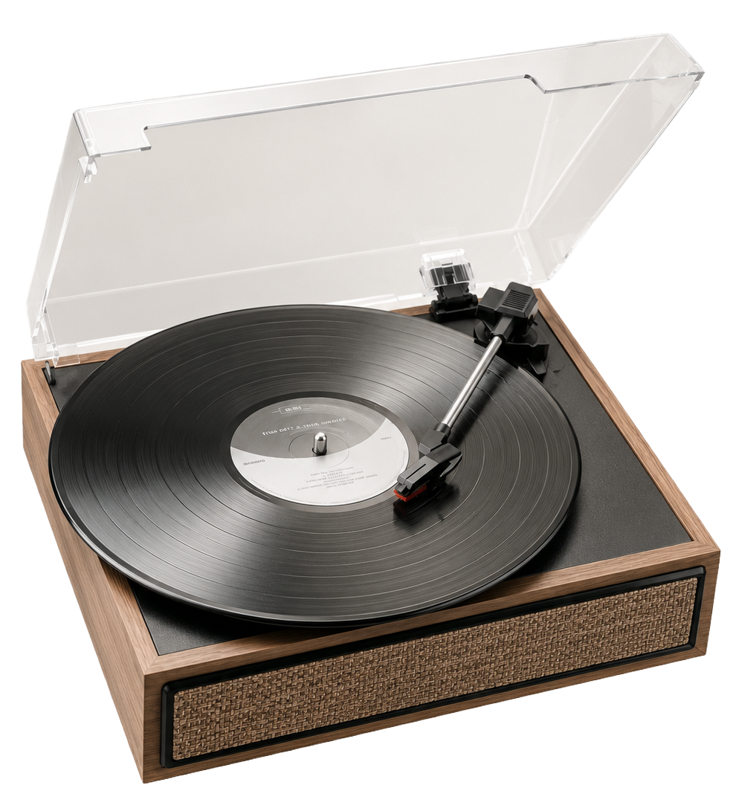
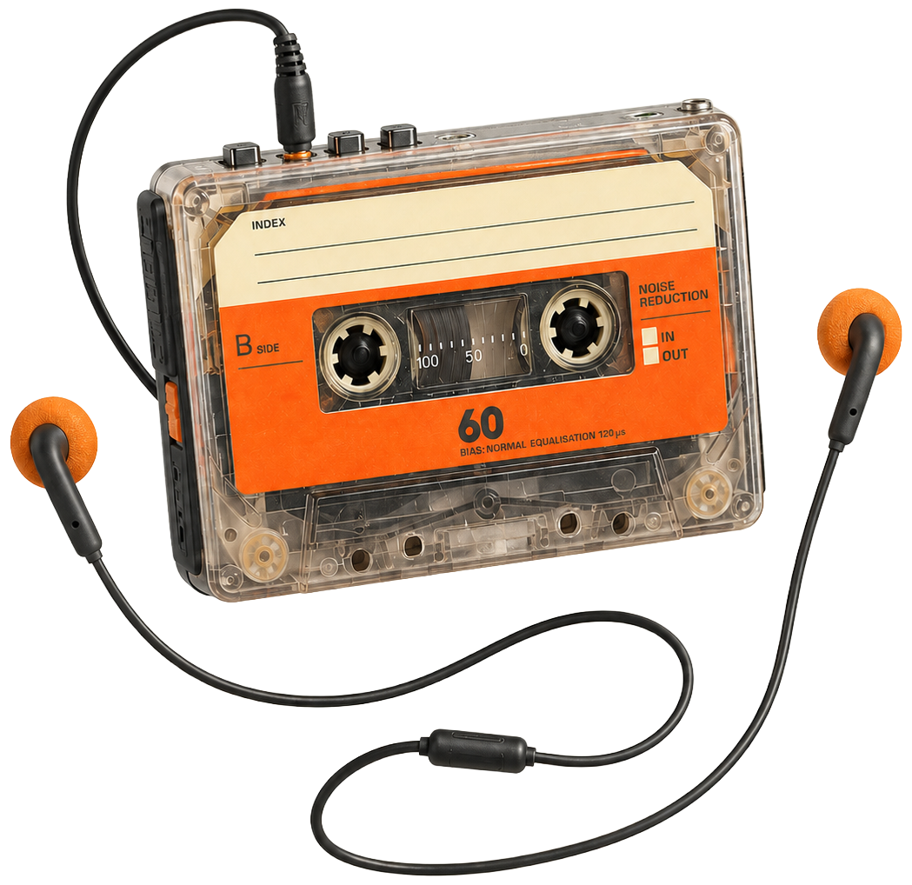
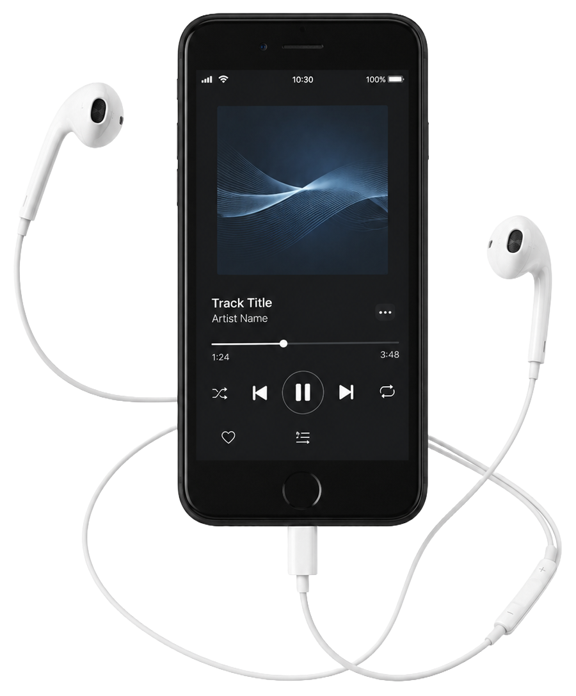
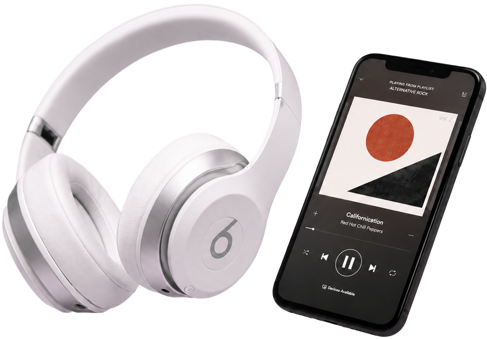
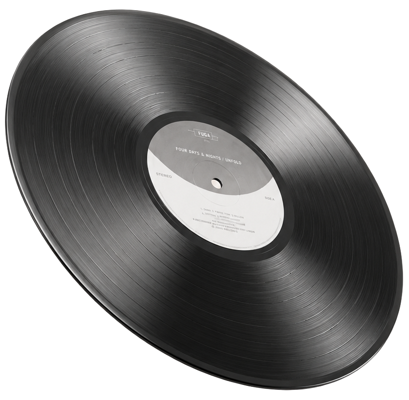

1950 - 1970
Vinilo
Escuchar era un ritual. La música se vivía con pausa, presencia y atención en cada detalle. Elegir un disco, apoyarlo en la bandeja y dejar caer la púa también era parte de la experiencia.

Solo cambió la forma de escucharla
Del ritual analógico al acceso instantáneo, cada soporte transformó nuestra relación con las canciones, los artistas y los recuerdos. Cambiaron los objetos, los hábitos y también la manera en que descubrimos, coleccionamos y compartimos música.
Scroll1950 - 1970
Escuchar era un ritual. La música se vivía con pausa, presencia y atención en cada detalle. Elegir un disco, apoyarlo en la bandeja y dejar caer la púa también era parte de la experiencia.


1970 - 1990
Portátil, grabable y personal. Tu música podía viajar con vos a todas partes. Armar compilados, grabar canciones de la radio y prestarlos entre amigos volvió la escucha algo mucho más cotidiano e íntimo.
1990 - 2000
Sonido digital, preciso y brillante. La escucha se volvió más limpia, directa y resistente. El CD consolidó una nueva idea de calidad y modernidad, con álbumes fáciles de transportar y conservar.

2000 - 2010
Miles de canciones en el bolsillo. La biblioteca musical dejó de ocupar espacio físico. Por primera vez, toda una colección podía acompañarte en movimiento, adaptándose al ritmo de cada día.
2010 - Hoy
Acceso instantáneo, playlists y recomendaciones. La música encontró una nueva forma de estar siempre cerca. Ya no hizo falta poseerla: alcanzó con buscar, tocar play y dejar que el algoritmo también participara del viaje.


Hoy
El regreso de lo analógico no es nostalgia vacía: es una experiencia, un objeto y una forma de expresarse. En tiempos de inmediatez, el vinilo recupera el valor de detenerse, mirar la tapa y escuchar con otra atención.